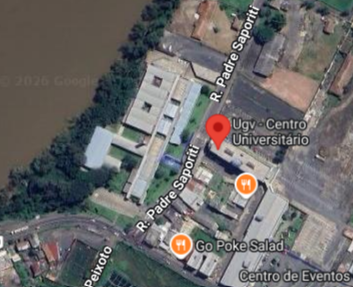

Quem ele é?

suas as armaduras
sobre os vilões
Quem ele é?
suas as armaduras
sobre os vilões
Fazendo seu cadastro no formulário, você poderá receber em primeira mão as últimas novidades antes de todos!

O Homem de Ferro Superior (Superior Iron Man) é uma versão corrompida, narcisista e implacável de Tony Stark na Terra-616. Origem Essa persona surgiu durante o evento nos quadrinhos Eixo (AXIS), quando um feitiço de inversão moral — lançado para deter o Caveira Vermelha — alterou a personalidade dos heróis e vilões. Enquanto os efeitos em massa foram desfeitos mais tarde, Tony se protegeu com um escudo de energia e manteve sua essência moral invertida em segredo. Ele se libertou de qualquer empatia, abraçando uma postura fria, egocêntrica e com forte complexo de deus. Ações em São Francisco Mudando-se para São Francisco, o Homem de Ferro Superior iniciou um plano de dominação psicológica e comercial: • Extremis 3.0: Ele lançou um aplicativo gratuito que oferecia beleza, saúde física e cura por meio de um tecnovírus. • A Cobrança: Após viciar a população, ele tirou a gratuidade e passou a cobrar uma fortuna diária para manter os usuários "perfeitos", chantageando quem recusasse. • Oposição: Ele enfrentou figuras como Pepper Potts (com a armadura Resgate), o Demolidor e uma inteligência artificial reserva do próprio Tony Stark original. A Armadura Endo-Sym (Modelo 50) Sua marca registrada é a armadura Endo-Sym, feita de metal líquido inteligente inspirado em biotecnologia de simbiontes: • Controle Mental: A massa metálica é armazenada nas células de Tony e responde diretamente aos seus pensamentos, fundindo-se instantaneamente ao seu corpo. • Resistência Avançada: Diferente de simbiontes comuns (como o Venom), ela não possui fraqueza a sons altos ou fogo, além de ser extremamente resistente e capaz de se regenerar.
O Homem de Ferro Superior é uma versão moralmente invertida de Tony Stark, surgida nos quadrinhos da Marvel durante o evento EIXO (AXIS) de 2014. Após um feitiço de inversão moral, Tony perdeu seu senso de responsabilidade e altruísmo, tornando-se egoísta, arrogante e ambicioso, usando sua genialidade para buscar perfeição e lucro a qualquer custo.
O Extremis 3.0 é uma versão modificada do vírus Extremis criada por Tony Stark nesta fase. Ele lançou um aplicativo gratuito em San Francisco que oferecia aos moradores a aparência física perfeita, saúde e juventude. Porém, após o período de teste, Tony passou a cobrar US$ 99,99 por dia pelo acesso, explorando o vício e a vaidade da população.
A armadura Endo-Sym (Model 50) é inteiramente feita de um metal líquido simbiótico, inspirado na biologia dos simbiontes alienígenas (como o Venom). Ela se conecta psiquicamente a Tony Stark, não necessita de peças mecânicas rígidas e pode se moldar instantaneamente ao redor do seu corpo ou alterar sua massa para confrontar inimigos de alto nível, como o Hulk.

R. Padre Saporiti, 717 - N. Sra. do Rocio, União da Vitória - PR, 84600-904
União da vitória, Paraná